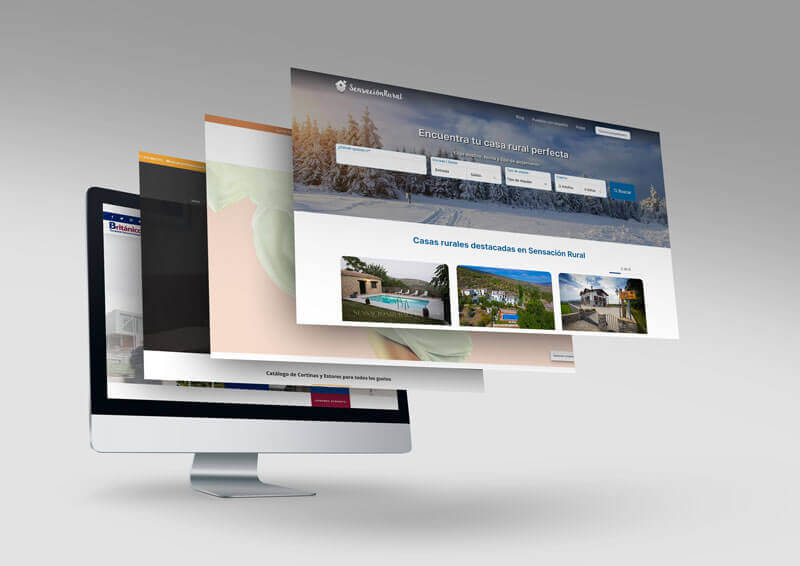
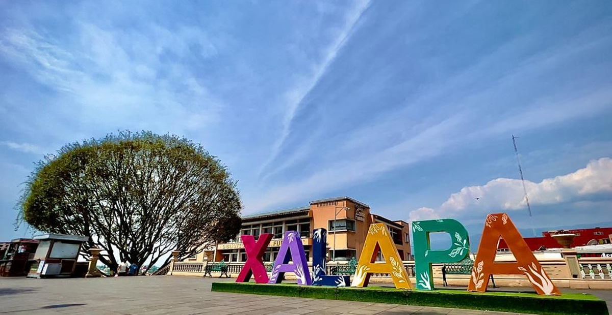

Lo que me gusta


Hola, soy Valeria, estudiante de la carrera de Administración de Negocios Internacionales y una apasionada exploradora de nuevos horizontes. Soy originaria de la encantadora ciudad de Xalapa, conocida por su riqueza cultural, artística y natural.
Viajar y descubrir nuevos lugares son mis grandes pasiones; me encanta sumergirme en diferentes culturas, conocer personas de todo el mundo y aprender de cada experiencia. Creo que cada viaje es una oportunidad para ampliar mi perspectiva y enriquecer tanto mi vida personal como profesional.
Como futura profesional en negocios internacionales, mi meta es conectar ideas, personas y mercados en un mundo cada vez más globalizado. Siempre busco nuevas formas de crecer, aprender y contribuir al desarrollo de proyectos que marquen la diferencia.
Este portafolio forma parte de la experiencia educativa de Proyecto Web, durante el intersemestral de invierno. Su propósito es concentrar todas las actividades realizadas a lo largo de este periodo, permitiendo una visión general de los proyectos y habilidades adquiridas. La clase tiene como objetivo principal enseñar a crear páginas web desde cero, abarcando desde los fundamentos básicos hasta el desarrollo de proyectos funcionales.
Además, esta clase resulta de gran relevancia para mi formación profesional como futura licenciada en Administración de Negocios Internacionales, ya que me proporciona herramientas digitales que permiten mejorar la presencia online de las empresas y gestionar eficientemente sus recursos en un entorno globalizado. El dominio de estas habilidades es fundamental para adaptarnos a las demandas del mercado y contribuir a la innovación en los negocios internacionales.

Xalapa, la capital del estado de Veracruz, México, es una ciudad rodeada de belleza natural y un clima agradable que invita a ser explorada. Situada en la Sierra de las Minas, ofrece un paisaje montañoso y una vegetación exuberante, destacándose por su biodiversidad y espacios naturales como el Parque Ecológico de Xalapa y el Jardín Botánico, que la convierten en un destino ideal para los amantes de la naturaleza.
La ciudad es también un importante centro cultural y educativo, con instituciones destacadas como la Universidad Veracruzana. Xalapa tiene una fuerte tradición en las artes, siendo sede de numerosos festivales, exposiciones y actividades culturales durante todo el año. Su centro histórico es hogar de la Plaza Lerdo y el Museo de Antropología de Xalapa, que preserva una valiosa colección de arte prehispánico.
